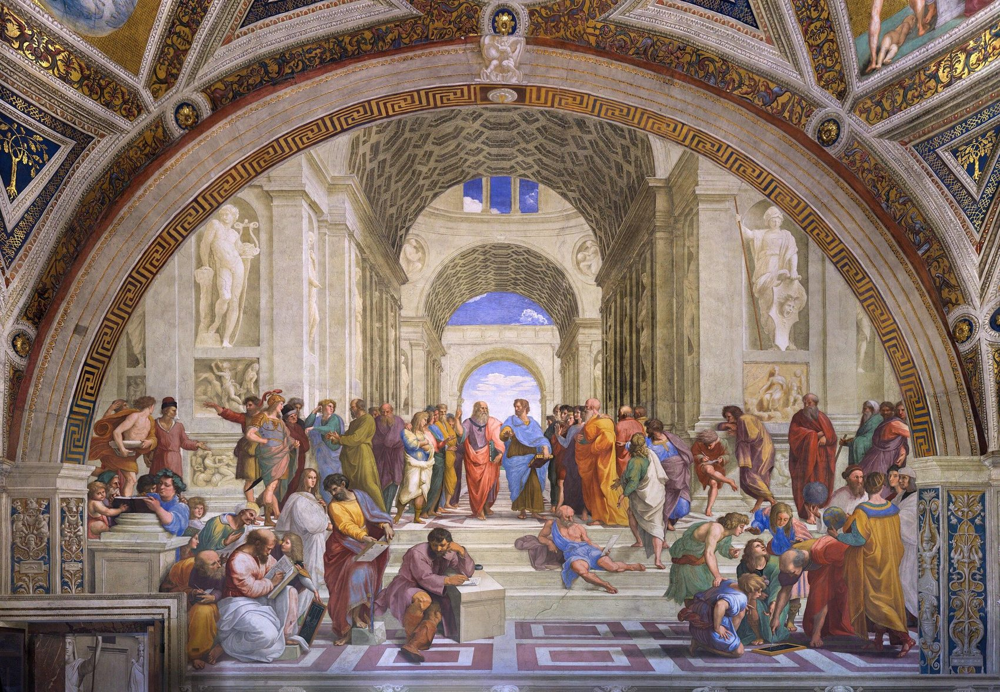
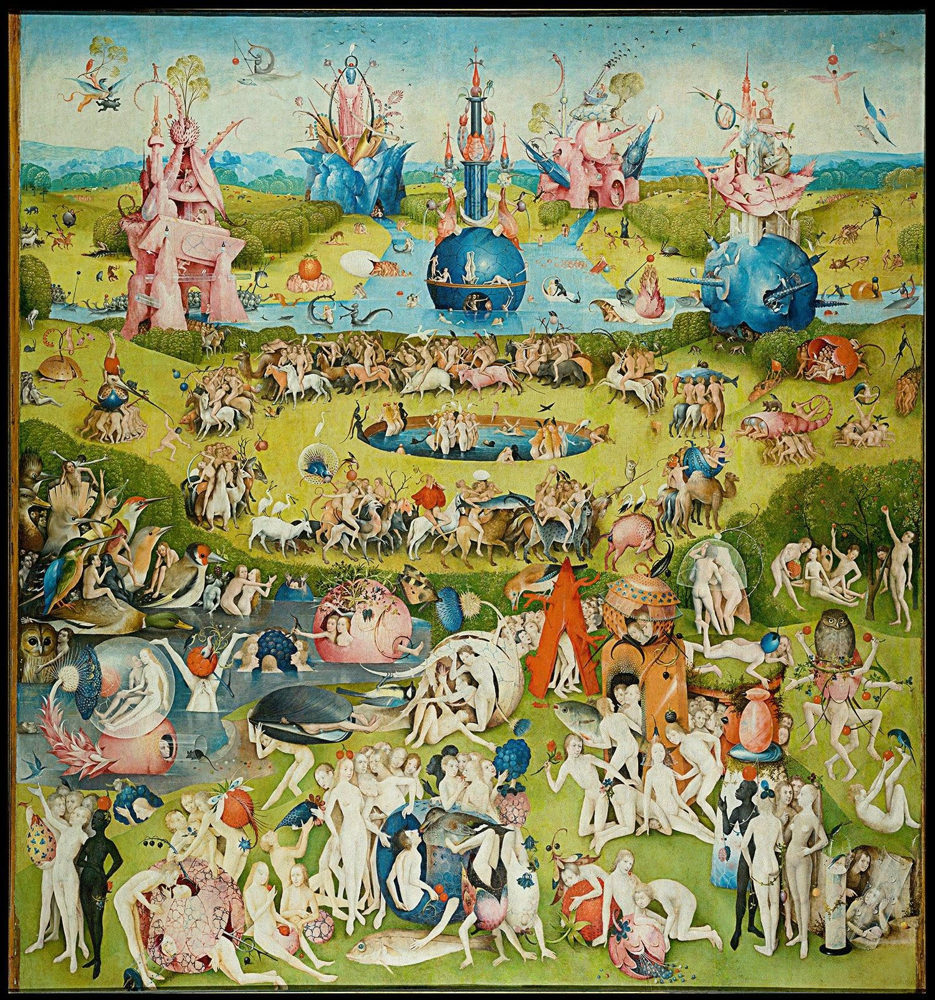
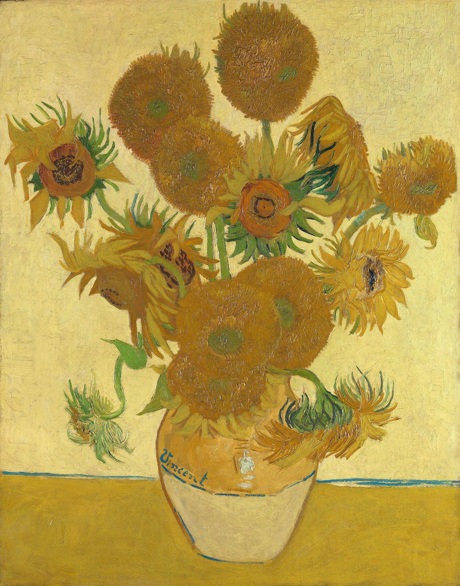

El arte como memoria, símbolo y expresión de la humanidad.

Piedra, pigmento, lienzo, bronce…
Y sin embargo, nadie llora por la piedra.
Lloramos por lo que significaba.
El arte transmite ideas, emociones, creencias y críticas mediante símbolos, gestos, color y composición.
Una idea abstracta convertida en imagen concreta.

El Bosco no dejó ninguna explicación escrita: lo que sigue son lecturas posibles, no certezas.
Cada obra perdida es una página arrancada de nuestra biografía colectiva.
Lo que temían, cazaban y veneraban quienes no dejaron escritura.
Quién gobernaba y qué quería que fuera recordado.
Un hecho fijado por la mirada de quien lo vivió.

¿Libertad de protesta o preservación del patrimonio?
Resistió casi dos mil años de terremotos e imperios. En 2015 el Estado Islámico lo dinamitó para borrar un pasado que no encajaba en su relato.
Dos colosos de 55 y 38 metros tallados en la roca. Los talibanes los dinamitaron; hoy quedan los nichos vacíos, como una ausencia con forma.
Unía dos orillas y dos comunidades. Fue derribado durante la guerra y reconstruido piedra a piedra once años después… ¿es el mismo puente?
Entre las piezas retiradas había obras sobre las luchas de las mujeres, la diversidad, las víctimas y el acuerdo de paz. El Gobierno habló de evitar el «adoctrinamiento político»; sus críticos, de censura.
A veces la destrucción del patrimonio no es un daño colateral: es el objetivo.
Representación de una idea abstracta mediante una imagen concreta.
La dama de la justicia:
Y una de las alegorías más significativas de la vida: el amor, que no se ve, pero lo mueve todo.
«El arte es la memoria que la humanidad decidió pintar.»
Repetir el inicio de cada frase para dar ritmo y fuerza.
Pueden quemar el lienzo, pero no la mirada que aprendió a ver en él.
Pueden derribar el templo, pero no la fe que lo levantó piedra a piedra.
Pueden borrar la imagen, pero no la memoria que ya la lleva por dentro.
El arte puede desaparecer.
Pero su significado puede persistir.
En la memoria, en las copias, en quienes alguna vez lo miraron.
Pero no todo sobrevive: hay pérdidas que ninguna memoria puede reparar.
Podemos destruir un lienzo, derribar un monumento o borrar una imagen;
pero ¿podemos destruir aquello que el arte sembró en la memoria de la humanidad?
«Ambiental» es una atmósfera generada en vivo: acordes lentos y campanas suaves, pensada para no competir con tu voz. Puedes cargar tu propio MP3, o en GitHub dejarlo en audio/musica.mp3.
Conectando…
Estado: esperando
Pinturas de dominio público y fotografías de Wikimedia Commons con licencias libres.